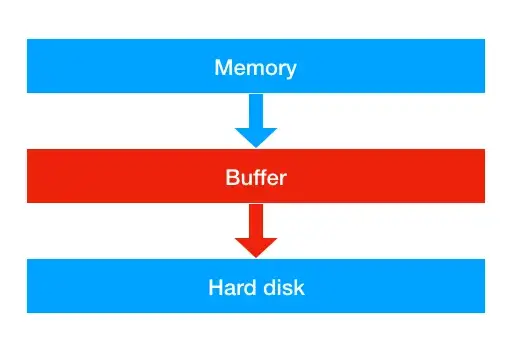

write bufferinf
.write() por defecto, sino escribe más de 8KB, pytohn no escribe en disco y escribe en buffering.
En estos casos solo escribe realmente en dico cuando .close() o .flush()

Se puede cambiar el tamñado del bufering al abrir un file:
| Filte type | buffering=-1 (defualt) | buffering=0 | buffering=1 | buffering>1 | |-------------------------------------|-------------|----------------|---------------- | Text | io.DEFAULT_BUFFER_SIZE | - | line buffering | io.DEFAULT_BUFFER_SIZE | Binary | io.DEFAULT_BUFFER_SIZE | unbuffered | - | specified buffer size
Error comun:
No especificar el buffering y por defecto es=-1 Esto siginififica que solo escribirar en dicso cuando halla una escritoura mayor de 8192 bytes (8KB).
Por loa tanto se va llenano la memoria del buffer con escrituras pequeñas (menores de 8192 bytes) y finalemnte el OS mata el proceso.
https://medium.com/@bramblexu/understand-the-buffer-policy-in-python-78e91e7759ca
Numpy IO
Numpy Read array
np.load()--> ⌠Slownp.memmap()--> ✅ Fastnp.memmap("matrix_Nx512_float32", dtype='float32', mode='r').reshape((-1,512))
Numpy Write array
my_file = open(filepath, mode='wb')Open file in write binary mode- Write
my_arr.save(my_file)⌠Write unncesary info (type, shape)my_arr.tofile(my_file)✅ Always write to diskmy_file.write(my_arr.tobytes())✅ Only writes to disk when buffer (8KB) is full. You can force to write by callingmy_file.flush()ormy_file.close()
List Slicing withot copy data
data = b"abcdefgh"
data_view = memoryview(data)
sub_data = data_view[1:3]
https://julien.danjou.info/high-performance-in-python-with-zero-copy-and-the-buffer-protocol/